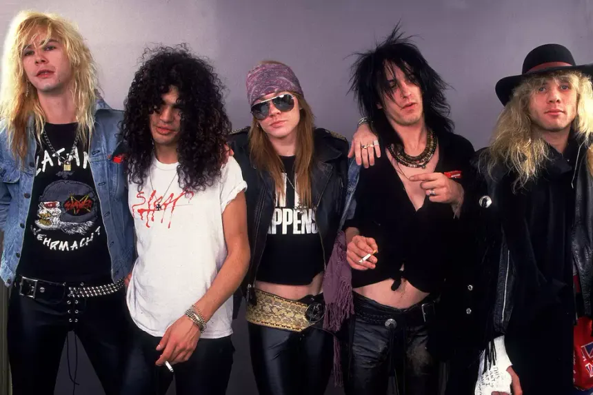

O rock surgiu nos Estados Unidos na década de 1950, influenciado pelo rhythm and blues, country e gospel.
Chuck Berry, Little Richard e Elvis Presley foram pioneiros, trazendo energia, ritmo acelerado e guitarras
elétricas marcantes;
Os jovens da epóca se identificaram com a energia e rebeldia do gênero, transformando-se rapidamente
popular.
1950s-1960s: Origem e Expansão
Surge nos EUA, misturando rhythm and blues e country (Chuck Berry, Elvis Presley). Nos anos 60, a "British Invasion"
(The Beatles, Rolling Stones) e o rock psicodélico (Pink Floyd, The Doors) revolucionam o gênero.
Elvis Presley, um dos pioneiros do rock n roll
1970s-1980s: Pesado e Comercial
O hard rock e o heavy metal crescem (Led Zeppelin, Black Sabbath). O punk (Ramones, The Clash) desafia o
mainstream, enquanto o rock se torna mais comercial nos anos 80 (Guns N’ Roses, Bon Jovi). O metal se ramifica e
o pós-punk surge (The Cure, Depeche Mode).

Guns n roses, um dos maiores nomes dos anos 80
1990s-2000s: Alternativo e Diversificação
O grunge domina os anos 90 (Nirvana, Pearl Jam), enquanto o indie rock e o pop punk crescem nos 2000s (The
Strokes, Green Day). O rock se mistura a outros gêneros, adaptando-se à era digital.
Nirvana, uma das bandas mais influentes da História
2010-Presente
Depois de muitos anos de seu surgimentos e diversas mudanças no estilo que formaram subgêneros, o rock ainda é um
estilo musical muito popular nos dias atuais.